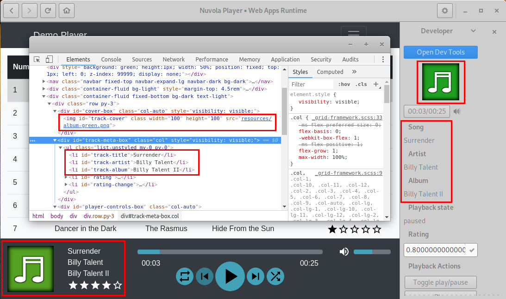
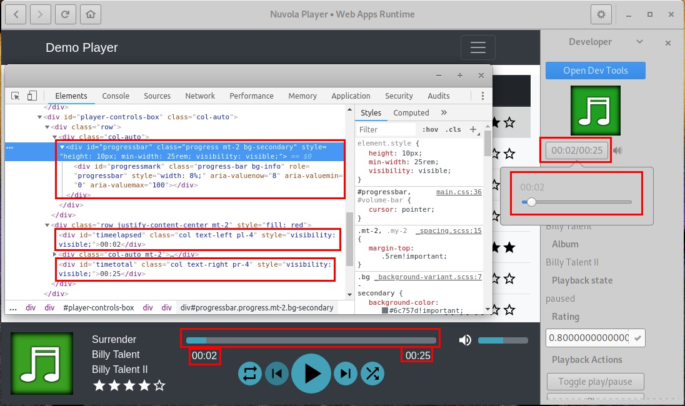

Media Player Integration
Historically, Nuvola Apps Runtime (previously known as Nuvola Player) has a great support for media players and offers a high level API for Media Player Integration.
Prerequisites
Before continuing, make sure you are familiar with following topics:
- Service Integration Tutorial: Generic information how to set up Nuvola ADK, create a basic skeleton of your script and open web inspector tools.
- Document Object Model: Methods how to extract metadata from a web page, e.g. document.getElementById, document.getElementsByName, document.getElementsByClassName, document.getElementsByTagName, document.querySelector, document.querySelectorAll.
Metadata
Media player scripts generally contain these metadata:
"categories": "AudioVideo;Audio;"- for the launcher to be shown among audio & video applications"requirements": "Feature[Flash]"- if your web app requires Flash plugin for media playback"requirements": "Codec[MP3]"- if your web app requires HTML5 Audio with MP3 codec for media playback
Integration Script
Media player skeleton
Save the code bellow as a integrate.js file. It performs following actions:
- Creates new
Nuvola.MediaPlayercomponent. - Creates new
WebAppobject. - Initializes WebWorker process to call
_onPageReadycallback when page is loaded. - Creates
update()loop. - Connect handler for actions.
1 2 3 4 5 6 7 8 9 10 11 12 13 14 15 16 17 18 19 20 21 22 23 24 25 26 27 28 29 30 31 32 33 34 35 36 37 38 39 40 41 42 43 44 45 46 47 48 49 50 51 52 53 | "use strict"; (function(Nuvola) { // Create media player component var player = Nuvola.$object(Nuvola.MediaPlayer); // Handy aliases var PlaybackState = Nuvola.PlaybackState; var PlayerAction = Nuvola.PlayerAction; // Create new WebApp prototype var WebApp = Nuvola.$WebApp(); // Initialization routines WebApp._onInitWebWorker = function(emitter) { Nuvola.WebApp._onInitWebWorker.call(this, emitter); var state = document.readyState; if (state === "interactive" || state === "complete") this._onPageReady(); else document.addEventListener("DOMContentLoaded", this._onPageReady.bind(this)); } // Page is ready for magic WebApp._onPageReady = function() { // Connect handler for signal ActionActivated Nuvola.actions.connect("ActionActivated", this); // Start update routine this.update(); } // Extract data from the web page WebApp.update = function() { // ... // Schedule the next update setTimeout(this.update.bind(this), 500); } // Handler of playback actions WebApp._onActionActivated = function(emitter, name, param) { } WebApp.start(); })(this); // function(Nuvola) |
Playback state
Looking at the code of a web page shown in the picture bellow, the code to extract playback state might be. Playback states are defined in an enumeration Nuvola.PlaybackState and set by method player.setPlaybackState().
... var PlaybackState = Nuvola.PlaybackState; ... WebApp.update = function() { ... try { switch(document.getElementById("status").innerText) { case "Playing": var state = PlaybackState.PLAYING; break; case "Paused": var state = PlaybackState.PAUSED; break; default: var state = PlaybackState.UNKNOWN; break; } } catch(e) { // Always expect errors, e.g. document.getElementById("status") might be null var state = PlaybackState.UNKNOWN; } player.setPlaybackState(state); ... }

Track details
Similarly, we can obtain track details and pass them to method player.setTrack()
WebApp.update = function() { ... var track = { artLocation: null, // always null rating: null // same } var idMap = {title: "track", artist: "artist", album: "album"} for (var key in idMap) { try { track[key] = document.getElementById(idMap[key]).innerText || null; } catch(e) { // Always expect errors, e.g. document.getElementById() might return null track[key] = null; } } player.setTrack(track); ... }

Media Player Actions
The second responsibility of a service integration is to manage media player actions:
- Set which actions are enabled.
- Invoke the actions when they are activated.
The first part is done via calls player.setCanPause(), player.setCanPlay(), player.setCanGoPrev() and player.setCanGoNext():
WebApp.update = function() { ... var enabled; try { enabled = !document.getElementById("prev").disabled; } catch(e) { enabled = false; } player.setCanGoPrev(enabled); try { enabled = !document.getElementById("next").disabled; } catch(e) { enabled = false; } player.setCanGoNext(enabled); var playPause = document.getElementById("pp"); try { enabled = playPause.innerText == "Play"; } catch(e) { enabled = false; } player.setCanPlay(enabled); try { enabled = playPause.innerText == "Pause"; } catch(e) { enabled = false; } player.setCanPause(enabled); ... }

To handle playback actions defined in an enumeration PlayerAction, it is necessary to connect to Actions::ActionActivated signal. You can use a convenient function Nuvola.clickOnElement() to simulate clicking.
var PlayerAction = Nuvola.PlayerAction; ... WebApp._onPageReady = function() { // Connect handler for signal ActionActivated Nuvola.actions.connect("ActionActivated", this); // Start update routine this.update(); } ... WebApp._onActionActivated = function(emitter, name, param) { switch (name) { case PlayerAction.TOGGLE_PLAY: case PlayerAction.PLAY: case PlayerAction.PAUSE: case PlayerAction.STOP: Nuvola.clickOnElement(document.getElementById("pp")); break; case PlayerAction.PREV_SONG: Nuvola.clickOnElement(document.getElementById("prev")); break; case PlayerAction.NEXT_SONG: Nuvola.clickOnElement(document.getElementById("next")); break; } }
Always test playback actions
You should click action buttons in the developer's sidebar to be sure they are working as expected.
Custom actions
Service integrations can also create custom Actions like thumbs up/down or star rating.
Progress bar
Since Nuvola 4.5, it is also possible to integrate progress bar. If you wish to make your script compatible with older versions, use respective Nuvola.checkVersion condition as shown in examples bellow.
In order to extract track length and position, use these API calls:
- MediaPlayer.setTrack supports
track.lengthproperty, which holds track length either as a string "mm:ss" or number of microseconds. This property is ignored in Nuvola < 4.5. - MediaPlayer.setTrackPosition is used to update track position. This method is not available in Nuvola < 4.5 and results in error.
- Nuvola.parseTimeUsec (in Nuvola >= 4.5) can be used to convert track length string (e.g. "2:35")
into the number of microseconds. MediaPlayer.setTrack does that automatically
for the
track.lengthproperty.
WebApp.update = function() { ... // @API 4.5: track.length ignored in Nuvola < 4.5 var elm = document.getElementById("timetotal"); track.length = elm ? elm.innerText || null : null; player.setTrack(track); ... if (Nuvola.checkVersion && Nuvola.checkVersion(4, 4, 18)) // @API 4.5 { var elm = document.getElementById("timeelapsed"); player.setTrackPosition(elm ? elm.innerText || null : null); } ... }
If you wish to let user change track position, use this API:
- MediaPlayer.setCanSeek is used to enable/disable remote seek. This method is not available in Nuvola < 4.5 and results in error.
- Then the PlayerAction.SEEK is emitted whenever a remote seek is requested.
The action parameter contains a track position in microseconds.
PlayerAction.SEEKis undefined in Nuvola < 4.5 and the handler is never executed. - You may need to use Nuvola.clickOnElement with coordinates to trigger a click
event at the position of progress bar corresponding to the track position,
e.g.
Nuvola.clickOnElement(progressBar, param/Nuvola.parseTimeUsec(trackLength), 0.5).
WebApp.update = function() { ... if (Nuvola.checkVersion && Nuvola.checkVersion(4, 4, 18)) // @API 4.5 { player.setCanSeek(state !== PlaybackState.UNKNOWN); } ... } ... WebApp._onActionActivated = function(emitter, name, param) { switch (name) { ... case PlayerAction.SEEK: // @API 4.5: undefined & ignored in Nuvola < 4.5 var elm = document.getElementById("timetotal"); var total = Nuvola.parseTimeUsec(elm ? elm.innerText : null); if (param > 0 && param <= total) Nuvola.clickOnElement(document.getElementById("progresstext"), param/total, 0.5); break; ... } } ...

Volume management
Since Nuvola 4.5, it is also possible to integrate volume management. If you wish to make your script compatible with older versions, use respective Nuvola.checkVersion condition as shown in examples bellow.
In order to extract volume, use MediaPlayer.updateVolume with the parameter in range 0.0-1.0 (i.e. 0-100%). This method is not available in Nuvola < 4.5 and results in error.
WebApp.update = function() { ... if (Nuvola.checkVersion && Nuvola.checkVersion(4, 4, 18)) // @API 4.5 { var elm = document.getElementById("volume"); player.updateVolume(elm ? elm.innerText / 100 || null : null); } ... }
If you wish to let user change volume, use this API:
- MediaPlayer.setCanChangeVolume is used to enable/disable remote volume managementThis method is not available in Nuvola < 4.5 and results in error.
- Then the PlayerAction.CHANGE_VOLUME is emitted whenever a remote volume change
requested. The action parameter contains new volume as a double value in range 0.0-1.0.
PlayerAction.CHANGE_VOLUMEis undefined in Nuvola < 4.5 and the handler is never executed. - You may need to use Nuvola.clickOnElement with coordinates to trigger a click
event at the position of volume bar corresponding to the desired volume,
e.g.
Nuvola.clickOnElement(volumeBar, param, 0.5).
WebApp.update = function() { ... if (Nuvola.checkVersion && Nuvola.checkVersion(4, 4, 18)) // @API 4.5 { player.setCanChangeVolume(state !== PlaybackState.UNKNOWN); } ... } ... WebApp._onActionActivated = function(emitter, name, param) { switch (name) { ... case PlayerAction.CHANGE_VOLUME: // @API 4.5: undefined & ignored in Nuvola < 4.5 document.getElementById("volume").innerText = Math.round(param * 100); break; ... } } ...